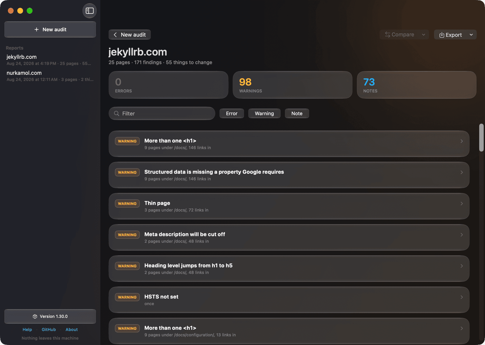
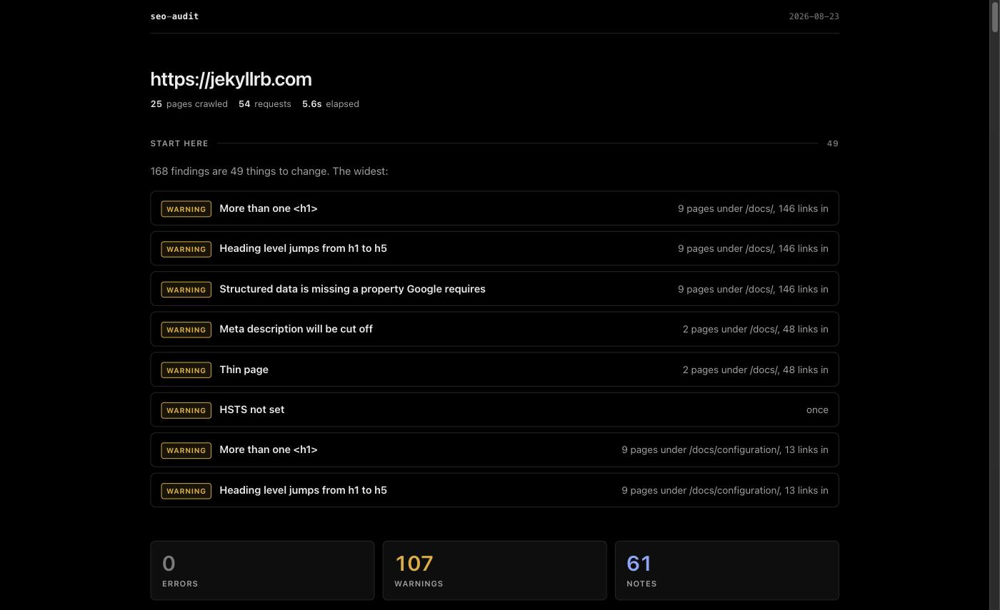
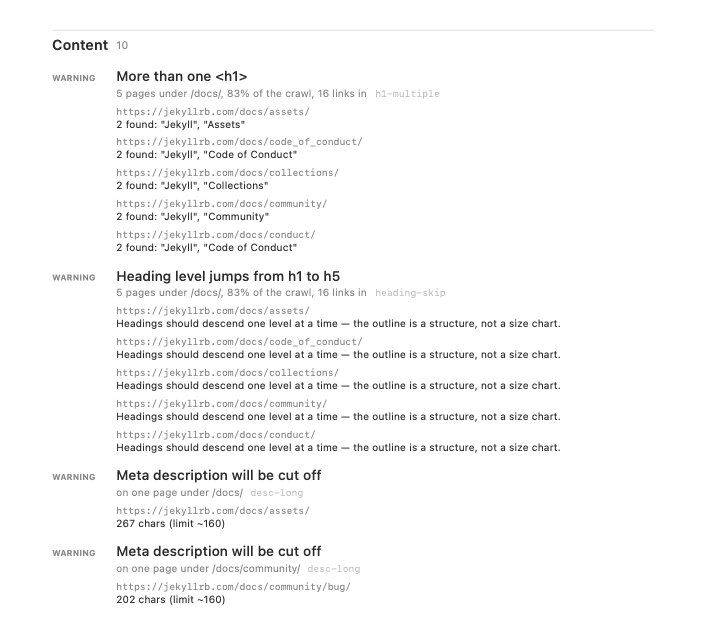
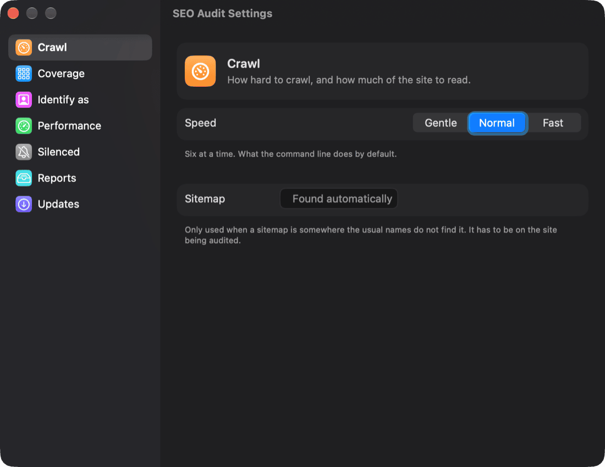

A crawler that reads a site's whole sitemap and checks each page for the SEO,
metadata and structured-data problems that single-URL graders cannot see.
Nothing to install. Node 18 or newer, and no dependencies at all.
Why it exists
It was written after three commercial graders all called a client's homepage healthy
while the language switcher on every translated article linked to a 404 — a bug none
of them could see, because it was only wrong on pages they never opened.
Ninety-odd checks
Indexability, canonicals, headings, structured data, hreflang, images, links,
sitemaps, redirects and the certificate.
No false positives
A check that cries wolf gets the whole report ignored. Anything sometimes
legitimate is a note, never an error.
Performance is never estimated
A fetch loop cannot see rendering. --psi asks Google for Google's
own measurement instead of guessing.
What it looks like
The same run, three ways. Nothing here is a mock-up — the app is a real window, the
report is a real report, and the PDF came out of the app's export.

The macOS app. 171 findings on jekyllrb.com are 55 things to change, worst first — and
every finished run stays in the sidebar, to compare the next one against.

The HTML report opens with the work, not the findings.

Exported as PDF, with every affected page.

Settings: seven panes, laid out the way macOS lays out System Settings. Gentle is one
connection at a time — the setting that gets through a site answering 429. Anything left at
its default is not sent, so the engine's defaults stay in the engine.
It tells you what to change, not what it found
A real store produced 2,081 findings across 347 URLs. That is not 2,081 problems — it
is one product template repeated 194 times. Every report opens with the work, ordered
worst first and then by how much of the site points at it.
✗ No <h1> 10 pages under /pages/
✗ Structured data is not valid JSON 3 pages under /collections/
! Heading level jumps from h1 to h3 225 pages under /products/, 69% of the crawl
! Title may be truncated in results 162 pages under /products/
Four ways to run it
Where
How
Terminal
npx github:nurkamol/seo-audit@v1 https://example.com Reports as terminal output, Markdown, HTML, JSON or CSV.
CI
uses: nurkamol/seo-audit@v1 Fails a build on regressions only, and comments on the pull request.
A window
brew install --cask seo-audit SEO Audit — a native report, no limits, nothing leaves the machine.
Your own Cloudflare
A password-protected form on your own Workers account, for people who
will not open a terminal. What it costs.
The macOS app
For anyone who would rather not open a terminal. SwiftUI and Liquid Glass, with the
report drawn natively — cause cards that expand into the pages they affect, filtering,
search, and export as PDF, HTML, Markdown, CSV or JSON. Every finished run is kept, so a
seven-minute crawl survives closing the window. It is a window over the same engine,
never a second one.